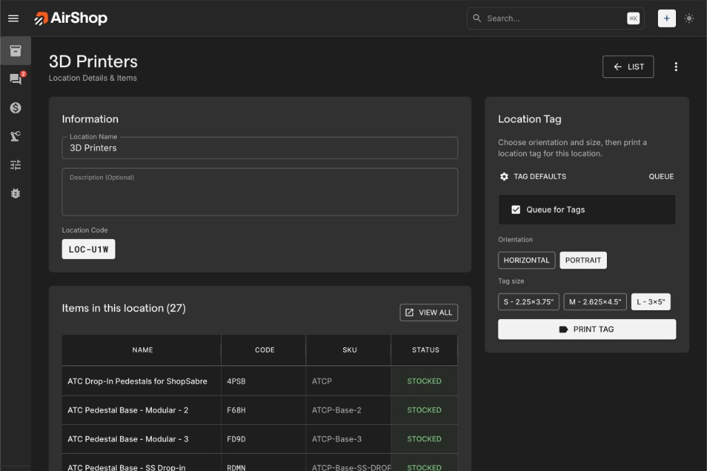
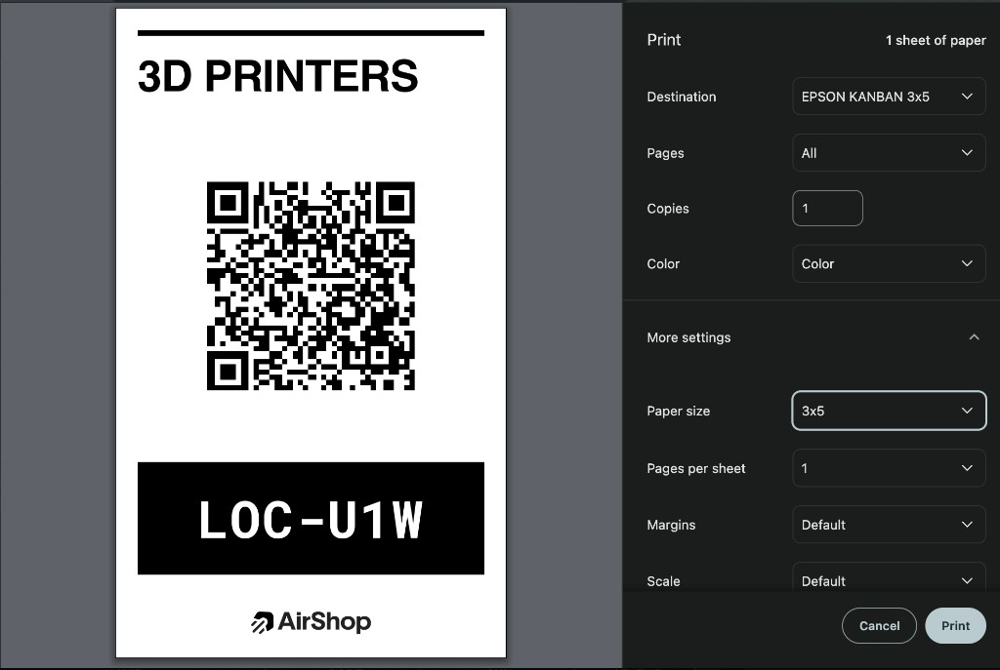

Location tags were added to make it easier to move from the shop floor back into AirShop. Print a tag for a shelf, bin, room, or storage area, place it where the work happens, and scan it later to open the matching location.
The first release added the location tag workflow, print queue, preview, and default tag settings. A follow-up added location QR handling in scanner input and global search, completing the scan-to-location flow.

Print tags for real locations
- Queue locations for tag printing from the locations workflow.
- Preview tags before printing so the location name, code, and QR layout are easy to check. The location tag guide covers the full workflow.
- Choose default tag size and orientation in inventory settings.

Scan to open the right place
- Location QR codes resolve directly to the matching location detail page.
- Scanner input and global search both understand location URLs.
- Location detail pages make it easier to review items assigned to that area.